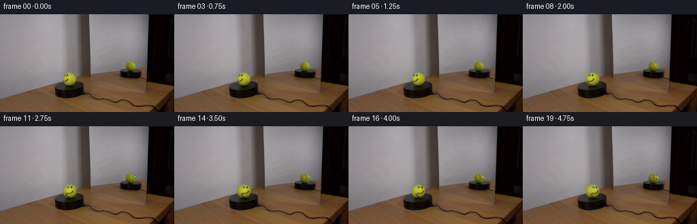
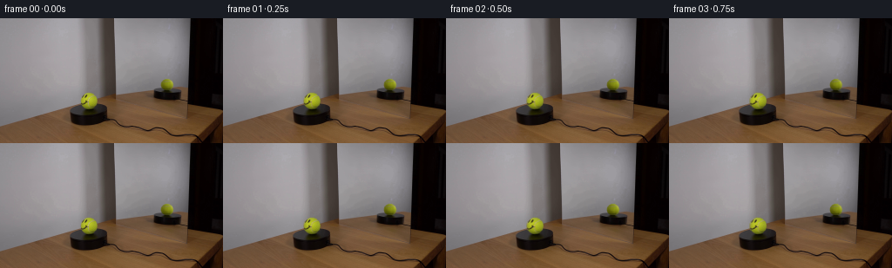

CODING AGENTS AS PIXEL WORLD MODELS
traex/GPT-5.6-Sol · 0120
点击播放 · 原生 RGB 像素
逐轮保存的候选
回放视频、检查图与代码变化。
每份候选均可单独播放。实际图片检查记录在下方工具轨迹中。
候选 01播放与检查图
点击播放 · 原生 RGB 像素


展开代码变化
--- 上一保存版本
+++ 本次保存版本
@@ -0,0 +1,137 @@
+from pathlib import Path
+import numpy as np
+import cv2
+from PIL import Image
+import artifact_io
+
+# Analytic, locked-camera animation. The photographed balls are treated as
+# shaded spheres: their low-frequency illumination remains fixed in the room,
+# while the high-frequency surface paint is advected around the vertical axis.
+ROOT = Path(__file__).resolve().parent
+first = np.asarray(Image.open(ROOT / "first_frame.png").convert("RGB"), dtype=np.uint8)
+H, W = first.shape[:2]
+f0 = first.astype(np.float32)
+
+
+def fit_ball(cx, cy, radius):
+ yy, xx = np.mgrid[0:H, 0:W].astype(np.float32)
+ xn = (xx - cx) / radius
+ yn = (yy - cy) / radius
+ inside = xn*xn + yn*yn < .94
+ # Select the chartreuse felt, omitting black paint, the platform, and wall.
+ R, G, B = f0[..., 0], f0[..., 1], f0[..., 2]
+ felt = inside & (G > B + 27) & (G > .94*R) & (G > 65)
+ A = np.stack([np.ones_like(xn), xn, yn, xn*xn, yn*yn, xn*yn], -1)
+ coef = []
+ for ch in range(3):
+ a, b = A[felt], f0[..., ch][felt]
+ c = np.linalg.lstsq(a, b, rcond=None)[0]
+ # One robust refit suppresses the seam and tiny face from the lighting fit.
+ err = np.abs(a @ c - b)
+ keep = err < np.percentile(err, 78)
+ coef.append(np.linalg.lstsq(a[keep], b[keep], rcond=None)[0])
+ coef = np.stack(coef, 1)
+ base = A @ coef
+ base = np.clip(base, 10, 230).astype(np.float32)
+ ratio = f0 / np.maximum(base, 8)
+ ratio = np.clip(ratio, .10, 2.15)
+ return base, ratio
+
+
+# Centers and silhouettes are measured from the two chartreuse components in
+# the supplied photograph (the small second sphere is the mirror image).
+ACT = (102.0, 95.1, 10.25)
+REF = (191.55, 76.15, 7.25)
+act_base, act_ratio = fit_ball(*ACT)
+ref_base, ref_ratio = fit_ball(*REF)
+
+
+def sample(img, mx, my):
+ return cv2.remap(img.astype(np.float32), mx.astype(np.float32),
+ my.astype(np.float32), cv2.INTER_CUBIC,
+ borderMode=cv2.BORDER_REFLECT_101)
+
+
+def sphere_layer(background, center, angle, base, ratio, own=True,
+ foreign_ink=None):
+ """Render one fixed sphere after a yaw in radians.
+
+ Light is evaluated at the destination point and only the photographed
+ albedo residual rotates. This keeps highlights stationary as on a real
+ rotating ball beneath fixed studio lighting.
+ """
+ cx, cy, r = center
+ yy, xx = np.mgrid[0:H, 0:W].astype(np.float32)
+ x = (xx-cx)/r
+ y = (yy-cy)/r
+ rr = x*x + y*y
+ z = np.sqrt(np.maximum(0, 1-rr))
+ ca, sa = np.cos(angle), np.sin(angle)
+ # Inverse yaw: destination surface point -> material location at frame zero.
+ qx = ca*x - sa*z
+ qz = sa*x + ca*z
+ qy = y
+ mx = cx + r*qx
+ my = cy + r*qy
+
+ if own:
+ tex = sample(ratio, mx, my)
+ # A newly revealed sliver has no source pixels. Clean felt is a much less
+ # conspicuous completion than stretching the silhouette edge.
+ vis = np.clip((qz + .035)/.10, 0, 1)[..., None]
+ tex = 1 + (tex-1)*vis
+ else:
+ tex = np.ones_like(base)
+ color = np.clip(base * tex, 0, 255)
+
+ if foreign_ink is not None:
+ # Carry only the genuinely dark smile paint from the direct view into
+ # the mirror. This lets the initially blank reflected side gradually
+ # reveal the marking, without copying its different illumination.
+ src_ratio, src_center, phase = foreign_ink
+ acx, acy, ar = src_center
+ cp, sp = np.cos(phase), np.sin(phase)
+ # Mirror reverses the horizontal image coordinate.
+ px = -x
+ iqx = cp*px - sp*z
+ iqz = sp*px + cp*z
+ imx = acx + ar*iqx
+ imy = acy + ar*y
+ arat = sample(src_ratio, imx, imy)
+ lum = .299*arat[..., 0] + .587*arat[..., 1] + .114*arat[..., 2]
+ # Softly isolate black marker; chromatic felt and white highlight remain.
+ amount = np.clip((.79-lum)/.30, 0, 1)
+ amount *= np.clip((iqz+.02)/.11, 0, 1)
+ # Keep only the interior painted area, avoiding the dark ball rim/contact.
+ source_rad = iqx*iqx + y*y
+ amount *= np.clip((.86-source_rad)/.10, 0, 1)
+ ink = np.array([28., 29., 12.], np.float32)
+ color = color*(1-amount[..., None]*.82) + ink*amount[..., None]*.82
+
+ # Subpixel-feathered but spatially fixed silhouette. Restricting the lower
+ # edge also retains the photographed contact line with the black platform.
+ alpha = np.clip((1.035-np.sqrt(rr))/.075, 0, 1)
+ alpha *= (yy <= cy+r*.965).astype(np.float32)
+ out = background.astype(np.float32)*(1-alpha[..., None]) + color*alpha[..., None]
+ return np.clip(out, 0, 255).astype(np.uint8)
+
+
+frames = [first.copy()]
+for i in range(1, 20):
+ # 70 degrees over 4.75 seconds: clearly readable at 4 fps, yet deliberately slow.
+ u = i/19.0
+ # Smooth start is physically plausible for a hand-started demonstration and
+ # avoids a discontinuous first transition while retaining near-constant speed.
+ travel = np.deg2rad(70.0) * (u*u*(3-2*u))
+ frame = first.copy()
+ frame = sphere_layer(frame, ACT, travel, act_base, act_ratio, own=True)
+ # In a plane mirror apparent horizontal motion is reversed.
+ phase = travel - np.deg2rad(88.0)
+ frame = sphere_layer(frame, REF, -travel, ref_base, ref_ratio, own=True,
+ foreign_ink=(act_ratio, ACT, phase))
+ frames.append(frame)
+
+frames = np.stack(frames).astype(np.uint8)
+# Contract requirement: do not permit even a conversion-rounding change here.
+frames[0] = first
+artifact_io.save(frames, ROOT)
可观测工具轨迹
实际执行的命令与返回图片。
命令 1exit 0
/bin/bash -lc "cat GENERATION_RULES.md && printf '\\n---PROMPT---\\n' && cat prompt.txt"
命令 2exit 127
/bin/bash -lc "find . -maxdepth 2 -type f -printf '%p\\n' | sort && file first_frame.png"
命令 3exit 0
/bin/bash -lc "python3 - <<'PY'
from PIL import Image
import numpy as np
im=np.array(Image.open('first_frame.png').convert('RGB'))
print(im.shape, im.dtype, im.min(), im.max())
# global mean and representative kmeans via cv2
import cv2
x=im.reshape(-1,3).astype(np.float32)
criteria=(cv2.TERM_CRITERIA_EPS+cv2.TERM_CRITERIA_MAX_ITER,50,.2)
_,lab,cen=cv2.kmeans(x,12,None,criteria,10,cv2.KMEANS_PP_CENTERS)
cnt=np.bincount(lab.ravel())
for i in np.argsort(cnt)[::-1]: print(cnt[i], np.rint(cen[i]).astype(int))
# Bright/saturated bounding boxes various masks
hsv=cv2.cvtColor(im,cv2.COLOR_RGB2HSV)
for name,m in [('yellow',(hsv[:,:,0]>18)&(hsv[:,:,0]<48)&(hsv[:,:,1]>70)),('dark',im.mean(2)<45),('sat',hsv[:,:,1]>80),('bright',im.mean(2)>200)]:
ys,xs=np.where(m); print(name, len(xs), (xs.min(),ys.min(),xs.max(),ys.max()) if len(xs) else None)
PY"命令 4exit 1
/bin/bash -lc "python3 - <<'PY'
import cv2, numpy as np
from PIL import Image
im=np.array(Image.open('first_frame.png').convert('RGB')); hsv=cv2.cvtColor(im,cv2.COLOR_RGB2HSV)
# make kmeans spatial report grid dominant class
x=im.reshape(-1,3).astype(np.float32)
_,l,c=cv2.kmeans(x,10,None,(3,50,.2),10,cv2.KMEANS_PP_CENTERS); l=l.reshape(144,256)
# sort centers brightness and letters
order=np.argsort(c.mean(1)); mp={j:'0123456789'[i] for i,j in enumerate(order)}
print('centers dark->light');
for i,j in enumerate(order):print(i, c[j].round().astype(int))
for y in range(0,144,6):
print(''.join(max(set(mp[int(v)] for v in l[y:y+6,x:x+4].flat),key=lambda z:list(mp[int(v)] for v in l[y:y+6,x:x+4].flat).count) for x in range(0,256,4)))
# components yellow stricter common tennis range H 20-45 S>80 V>70
for lo,hi in [(15,50),(20,45),(22,40),(25,38)]:
m=((hsv[:,:,0]>=lo)&(hsv[:,:,0]<=hi)&(hsv[:,:,1]>80)&(hsv[:,:,2]>60)).astype('uint8')
n,lab,stats,cent=cv2.connectedComponentsWithStats(m)
print('range',lo,hi, sorted([tuple(v) for v in stats[1:] if v[4]>4],key=lambda x:-x[4])[:15])
PY"命令 5exit 1
/bin/bash -lc "python3 - <<'PY'
import cv2,numpy as np
from PIL import Image
im=np.array(Image.open('first_frame.png').convert('RGB')); g=cv2.cvtColor(im,cv2.COLOR_RGB2GRAY); hsv=cv2.cvtColor(im,cv2.COLOR_RGB2HSV)
cs=cv2.HoughCircles(g,cv2.HOUGH_GRADIENT,dp=1,minDist=15,param1=80,param2=18,minRadius=5,maxRadius=45)
print('circles',None if cs is None else np.round(cs[0],1))
# components ranges
for name,m in [
('yellow',((hsv[:,:,0]>=15)&(hsv[:,:,0]<=50)&(hsv[:,:,1]>70)&(hsv[:,:,2]>50))),
('greenish',((im[:,:,1]>im[:,:,0]*.95)&(im[:,:,1]>im[:,:,2]*1.15)&(im[:,:,0]>60))),
('nearblack',(g<25)),('dark',(g<55)),('gray',(hsv[:,:,1]<25))]:
m=m.astype('uint8'); n,lab,stats,cent=cv2.connectedComponentsWithStats(m)
print('\\n',name,'total',m.sum())
for s,c in sorted(zip(stats[1:],cent[1:]),key=lambda z:-z[0,4])[:20]:
if s[4]>3: print('stat',s.tolist(),'cent',c.round(1).tolist())
# avg by coarse regions
print('\\ncoarse means')
for y in range(0,144,18):
print(y, [np.mean(im[y:y+18,x:x+32],axis=(0,1)).round().astype(int).tolist() for x in range(0,256,32)])
PY"命令 6exit 0
/bin/bash -lc "python3 - <<'PY'
import cv2,numpy as np
from PIL import Image
im=np.array(Image.open('first_frame.png').convert('RGB')); g=cv2.cvtColor(im,cv2.COLOR_RGB2GRAY); hsv=cv2.cvtColor(im,cv2.COLOR_RGB2HSV)
for name,m in [
('yellow',((hsv[:,:,0]>=15)&(hsv[:,:,0]<=50)&(hsv[:,:,1]>70)&(hsv[:,:,2]>50))),
('greenish',((im[:,:,1]>im[:,:,0]*.95)&(im[:,:,1]>im[:,:,2]*1.15)&(im[:,:,0]>60))),
('nearblack',(g<25)),('dark',(g<55)),('gray',(hsv[:,:,1]<25))]:
m=m.astype('uint8'); n,lab,stats,cent=cv2.connectedComponentsWithStats(m)
inds=sorted(range(1,n),key=lambda z:-stats[z,4])[:20]
print('\\n',name,'total',m.sum())
for i in inds:
s=stats[i]; c=cent[i]
if s[4]>3: print('stat',s.tolist(),'cent',c.round(1).tolist())
print('\\ncoarse means')
for y in range(0,144,18):
print(y, [np.mean(im[y:y+18,x:x+32],axis=(0,1)).round().astype(int).tolist() for x in range(0,256,32)])
PY"命令 7exit 0
/bin/bash -lc "python3 - <<'PY'
import cv2,numpy as np
from PIL import Image
im=np.array(Image.open('first_frame.png').convert('RGB')); gray=cv2.cvtColor(im,cv2.COLOR_RGB2GRAY)
# Sobel coarse edge density ascii, 2x2 blocks
sob=np.maximum(abs(cv2.Sobel(gray,cv2.CV_32F,1,0)),abs(cv2.Sobel(gray,cv2.CV_32F,0,1)))
for y in range(0,144,3):
s=''
for x in range(0,256,4):
v=np.percentile(sob[y:y+3,x:x+4],85)
s += ' ' if v<8 else '.' if v<18 else ':' if v<35 else '*' if v<65 else '#' if v<120 else '@'
print(s)
# runs by scanline based broad RGB/intensity categories
print('\\nscan runs intensity quantized')
for y in [0,20,40,60,70,75,80,85,90,95,100,105,110,115,120,125,130,135,140,143]:
vals=(gray[y]//20).astype(int)
runs=[];st=0
for x in range(1,256):
if vals[x]"'!=vals[st]:
if x-st>=3:runs.append((st,x-1,int(vals[st]),im[y,(st+x-1)//2].tolist()))
st=x
if 256-st>=3:runs.append((st,255,int(vals[st]),im[y,(st+255)//2].tolist()))
print(y,runs)
PY'命令 8exit 0
/bin/bash -lc "python3 - <<'PY'
from PIL import Image
import numpy as np, cv2
im=np.array(Image.open('first_frame.png').convert('RGB'))
for cx,cy,r,nm in [(102,95,14,'actual'),(192,76,13,'mirror')]:
print('\\n',nm)
for y in range(cy-r,cy+r+1):
s=''
for x in range(cx-r,cx+r+1):
R,G,B=map(int,im[y,x]); v=max(R,G,B)
if v<20:c='@'
elif v<45:c='#'
elif v<75:c='D'
elif G>R*1.03 and G>B*1.5:c='Y' # tennis green yellow
elif R>G*1.3 and G>B*1.15:c='b' # brown
elif abs(R-G)<15 and abs(G-B)<15:c='g'
elif v<110:c='d'
elif v<145:c='m'
elif v<175:c='l'
else:c='W'
s+=c
print(s)
PY"命令 9exit 0
/bin/bash -lc "python3 - <<'PY'
from PIL import Image
import numpy as np, colorsys
im=np.array(Image.open('first_frame.png').convert('RGB'))
# compact per pixel values actual
for y in range(83,108):
print('y',y)
for x in range(87,117):
R,G,B=im[y,x]
# list foreground unusual: green if G-R > or low saturation/value deviations from local gray bg
if (int(G)>int(B)+15 and int(G)>=int(R)*.95) or max(R,G,B)-min(R,G,B)>35 or max(R,G,B)<80:
print(f'{x}:{R:03},{G:03},{B:03}',end=' ')
print()
PY"命令 10exit 0
/bin/bash -lc "python3 - <<'PY'
from PIL import Image
import numpy as np
im=np.array(Image.open('first_frame.png').convert('RGB'))
for y in range(84,107):
s=''
for x in range(90,115):
R,G,B=map(int,im[y,x])
# color map based tennis likelihood / dark on tennis
if G>B+50 and G>R*.95:
q=G
c='1' if q<80 else '2' if q<110 else '3' if q<140 else '4' if q<170 else '5'
elif max(R,G,B)<80:c='#'
elif max(R,G,B)<120:c='d'
elif abs(R-G)<15 and abs(G-B)<15:c='.'
else:c=' '
s+=c
print(f'{y:3} {s}')
PY"命令 11exit 0
/bin/bash -lc "python3 - <<'PY'
import cv2,numpy as np
from PIL import Image
im=np.array(Image.open('first_frame.png').convert('RGB')).astype(float)
# ball crop, median expected heavily blurred preserving radial? compare x mirror symmetric maybe
v=im.mean(2); sm=cv2.GaussianBlur(v,(0,0),2)
for y in range(86,105):
s=''
for x in range(92,112):
d=v[y,x]-sm[y,x]
s += '@' if d<-50 else '#' if d<-30 else 'D' if d<-15 else 'd' if d<-7 else ' ' if d<7 else '+' if d<15 else '*' if d<30 else 'O'
print(y,s)
PY"命令 12exit 0
/bin/bash -lc 'cat artifact_io.py'
命令 13exit 0
/bin/bash -lc "cat > generate.py <<'PY'
from pathlib import Path
import numpy as np
import cv2
from PIL import Image
import artifact_io
# Analytic, locked-camera animation. The photographed balls are treated as
# shaded spheres: their low-frequency illumination remains fixed in the room,
# while the high-frequency surface paint is advected around the vertical axis.
ROOT = Path(__file__).resolve().parent
first = np.asarray(Image.open(ROOT / \"first_frame.png\").convert(\"RGB\"), dtype=np.uint8)
H, W = first.shape[:2]
f0 = first.astype(np.float32)
def fit_ball(cx, cy, radius):
yy, xx = np.mgrid[0:H, 0:W].astype(np.float32)
xn = (xx - cx) / radius
yn = (yy - cy) / radius
inside = xn*xn + yn*yn < .94
# Select the chartreuse felt, omitting black paint, the platform, and wall.
R, G, B = f0[..., 0], f0[..., 1], f0[..., 2]
felt = inside & (G > B + 27) & (G > .94*R) & (G > 65)
A = np.stack([np.ones_like(xn), xn, yn, xn*xn, yn*yn, xn*yn], -1)
coef = []
for ch in range(3):
a, b = A[felt], f0[..., ch][felt]
c = np.linalg.lstsq(a, b, rcond=None)[0]
# One robust refit suppresses the seam and tiny face from the lighting fit.
err = np.abs(a @ c - b)
keep = err < np.percentile(err, 78)
coef.append(np.linalg.lstsq(a[keep], b[keep], rcond=None)[0])
coef = np.stack(coef, 1)
base = A @ coef
base = np.clip(base, 10, 230).astype(np.float32)
ratio = f0 / np.maximum(base, 8)
ratio = np.clip(ratio, .10, 2.15)
return base, ratio
# Centers and silhouettes are measured from the two chartreuse components in
# the supplied photograph (the small second sphere is the mirror image).
ACT = (102.0, 95.1, 10.25)
REF = (191.55, 76.15, 7.25)
act_base, act_ratio = fit_ball(*ACT)
ref_base, ref_ratio = fit_ball(*REF)
def sample(img, mx, my):
return cv2.remap(img.astype(np.float32), mx.astype(np.float32),
my.astype(np.float32), cv2.INTER_CUBIC,
borderMode=cv2.BORDER_REFLECT_101)
def sphere_layer(background, center, angle, base, ratio, own=True,
foreign_ink=None):
\"\"\"Render one fixed sphere after a yaw in radians.
Light is evaluated at the destination point and only the photographed
albedo residual rotates. This keeps highlights stationary as on a real
rotating ball beneath fixed studio lighting.
\"\"\"
cx, cy, r = center
yy, xx = np.mgrid[0:H, 0:W].astype(np.float32)
x = (xx-cx)/r
y = (yy-cy)/r
rr = x*x + y*y
z = np.sqrt(np.maximum(0, 1-rr))
ca, sa = np.cos(angle), np.sin(angle)
# Inverse yaw: destination surface point -> material location at frame zero.
qx = ca*x - sa*z
qz = sa*x + ca*z
qy = y
mx = cx + r*qx
my = cy + r*qy
if own:
tex = sample(ratio, mx, my)
# A newly revealed sliver has no source pixels. Clean felt is a much less
# conspicuous completion than stretching the silhouette edge.
vis = np.clip((qz + .035)/.10, 0, 1)[..., None]
tex = 1 + (tex-1)*vis
else:
tex = np.ones_like(base)
color = np.clip(base * tex, 0, 255)
if foreign_ink is not None:
# Carry only the genuinely dark smile paint from the direct view into
# the mirror. This lets the initially blank reflected side gradually
# reveal the marking, without copying its different illumination.
src_ratio, src_center, phase = foreign_ink
acx, acy, ar = src_center
cp, sp = np.cos(phase), np.sin(phase)
# Mirror reverses the horizontal image coordinate.
px = -x
iqx = cp*px - sp*z
iqz = sp*px + cp*z
imx = acx + ar*iqx
imy = acy + ar*y
arat = sample(src_ratio, imx, imy)
lum = .299*arat[..., 0] + .587*arat[..., 1] + .114*arat[..., 2]
# Softly isolate black marker; chromatic felt and white highlight remain.
amount = np.clip((.79-lum)/.30, 0, 1)
amount *= np.clip((iqz+.02)/.11, 0, 1)
# Keep only the interior painted area, avoiding the dark ball rim/contact.
source_rad = iqx*iqx + y*y
amount *= np.clip((.86-source_rad)/.10, 0, 1)
ink = np.array([28., 29., 12.], np.float32)
color = color*(1-amount[..., None]*.82) + ink*amount[..., None]*.82
# Subpixel-feathered but spatially fixed silhouette. Restricting the lower
# edge also retains the photographed contact line with the black platform.
alpha = np.clip((1.035-np.sqrt(rr))/.075, 0, 1)
alpha *= (yy <= cy+r*.965).astype(np.float32)
out = background.astype(np.float32)*(1-alpha[..., None]) + color*alpha[..., None]
return np.clip(out, 0, 255).astype(np.uint8)
frames = [first.copy()]
for i in range(1, 20):
# 70 degrees over 4.75 seconds: clearly readable at 4 fps, yet deliberately slow.
u = i/19.0
# Smooth start is physically plausible for a hand-started demonstration and
# avoids a discontinuous first transition while retaining near-constant speed.
travel = np.deg2rad(70.0) * (u*u*(3-2*u))
frame = first.copy()
frame = sphere_layer(frame, ACT, travel, act_base, act_ratio, own=True)
# In a plane mirror apparent horizontal motion is reversed.
phase = travel - np.deg2rad(88.0)
frame = sphere_layer(frame, REF, -travel, ref_base, ref_ratio, own=True,
foreign_ink=(act_ratio, ACT, phase))
frames.append(frame)
frames = np.stack(frames).astype(np.uint8)
# Contract requirement: do not permit even a conversion-rounding change here.
frames[0] = first
artifact_io.save(frames, ROOT)
PY
python3 generate.py
python3 - <<'PY'
from PIL import Image
import numpy as np
f=np.stack([np.asarray(Image.open(f'frames/{i:02}.png')) for i in range(20)])
a=np.asarray(Image.open('first_frame.png'))
print(f.shape,f.dtype,'frame0 maxdiff',np.abs(f[0].astype(int)-a.astype(int)).max())
for i in [1,2,5,10,15,19]:
d=np.any(f[i]"'!=a,2); ys,xs=np.where(d)
print(i,'"'changed',d.sum(),'bbox',(xs.min(),ys.min(),xs.max(),ys.max()),'MAD',np.abs(f[i].astype(int)-a.astype(int)).sum()/d.sum()/3)
PY"命令 14exit 0
/bin/bash -lc "python3 - <<'PY'
from PIL import Image
import numpy as np
for fi in [0,5,10,15,19]:
im=np.array(Image.open(f'frames/{fi:02}.png'))
print('\\nFRAME',fi)
for cx,cy,r in [(102,95,11),(192,76,8)]:
print('ball')
for y in range(cy-r,cy+r+1):
s=''
for x in range(cx-r,cx+r+1):
R,G,B=map(int,im[y,x]); green=G-B
# values vs plausible felt by local light represented primarily G
if (x-cx)**2+(y-cy)**2 > r*r:s+=' '
elif max(R,G,B)<55:s+='@'
elif green<15:s+='#'
elif G<90:s+='d'
elif G<130:s+='2'
elif G<160:s+='3'
elif G<185:s+='4'
else:s+='5'
print(s)
PY"保存候选 1 份；完成命令 14 次；可验证图片返回 0 张。原始 API 响应与完整日志保留在本地。